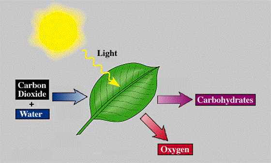

cahaya matahari untuk menghasilkan glukosa (glucose) atau gula
dan oksigen.
Pada umumnya, tumbuhan memerlukan karbondioksida dan air serta
cahaya matahari untuk menghasilkan glukosa (glucose) atau gula
dan oksigen.
Persamaan Reaksi Fotosintesis(photosynthetic reaction) dapat ditulis sebagai berikut:
Sumber : Gifer
6H2O + 6CO2 + cahaya → C6H12O6 + 6O2
Keterangan adalah:
H2O = air
CO2 = karbondioksida
C6H12O6 = gula atau glukosa
O2 = oksigen
Sumber : Science Parks
Aluminium oksida direaksikan dengan larutan asam klorida membentuk larutan
aluminium klorida dan air.